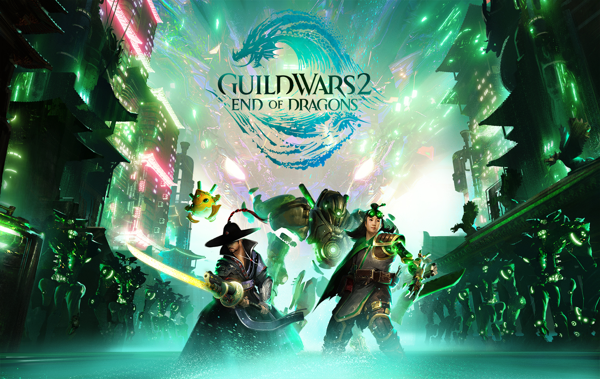
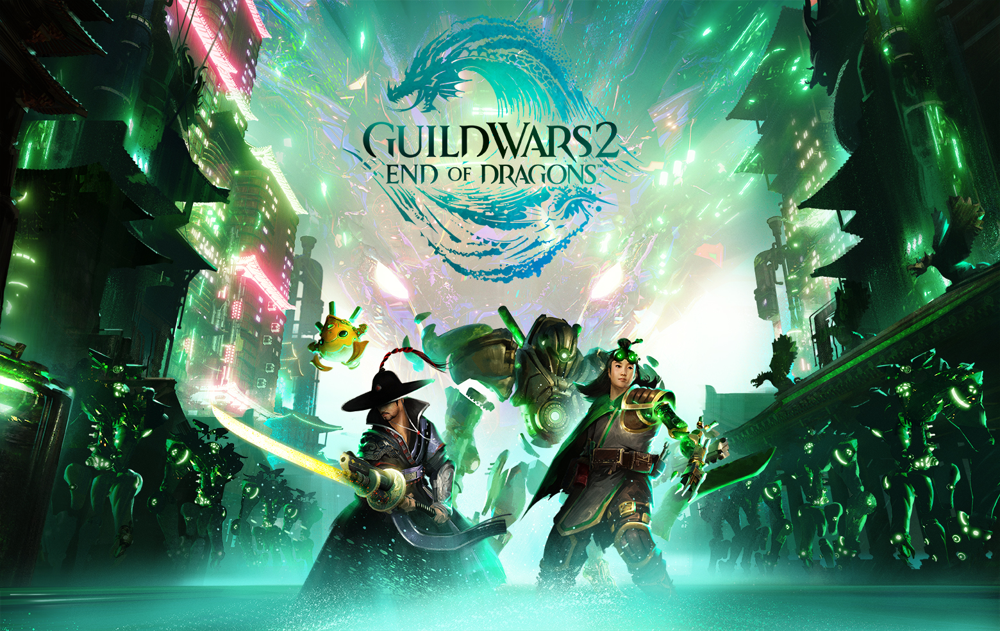

À propos de moi
Depuis mon plus jeune âge, j'ai toujours été fasciné par le monde de l'informatique et des jeux vidéo. J'ai passé des heures à explorer les recoins de mon ordinateur, à découvrir de nouveaux logiciels et à jouer à une multitude de jeux.
L'informatique me passionne pour son aspect créatif et sa capacité à résoudre des problèmes. J'aime apprendre de nouveaux langages de programmation, concevoir des sites web et développer des applications. J'apprécie également la communauté soudée des développeurs, toujours prêts à partager leurs connaissances et à s'entraider.
Quant aux jeux vidéo, ils me transportent dans des univers fantastiques et me permettent de vivre des aventures extraordinaires. J'aime particulièrement les jeux de stratégie, les jeux de rôle et les jeux d'action-aventure.Ils me permettent de me détendre, de stimuler mon esprit et de me connecter avec des amis du monde entier.
Au-delà de mon simple plaisir personnel, je suis convaincu que l'informatique et les jeux vidéo ont un impact positif sur la société. Ils peuvent être utilisés pour éduquer, divertir, connecter et même résoudre des problèmes mondiaux. C'est pourquoi je suis passionné par ce domaine et que je souhaite m'y impliquer davantage. J'espère un jour pouvoir utiliser mes compétences en informatique et ma passion pour les jeux vidéo pour créer des choses qui auront un impact positif sur le monde.
En plus de mes passions pour l'informatique et les jeux vidéo, j'aime également les tatouages, les Harley-Davidson, les Hot Rods et les Rat Rods. Je suis une personne curieuse et ouverte d'esprit, toujours à la recherche de nouvelles expériences et de nouveaux défis.
J'ai hâte de voir ce que l'avenir me réserve dans le domaine de l'informatique et des jeux vidéo, et j'ai hâte de partager ma passion avec d'autres personnes.
Expériences professionnelles
| Dates | Rôle | Responsabilités |
|---|---|---|
| 2021-Présent | Développeur Web | - Conception et développement de sites web - Intégration de fonctionnalités front-end - Maintenance et optimisation de sites web |
| 2019-2021 | Technicien Informatique | - Support technique aux utilisateurs - Installation et configuration de matériel et logiciels - Résolution de problèmes informatiques |
Galerie
 

Services de Dépannage Informatique
- Installation et configuration de logiciels
- Résolution de problèmes informatiques
- Nettoyage et optimisation de PC
- Aide à la création de sites web
Tarifs sur demande. Zone d'intervention : Brabant Wallon et Namur.
Contact
fredteknik@domination.org ou 0411/66.61.21.